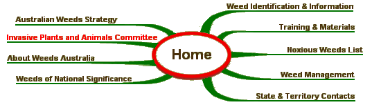

Invasive Plants and Animals Committee
|
Origin In August 2014, the National Biosecurity Committee (NBC) agreed to the merger of the Australian Weeds Committee and Vertebrate Pests Committee to form the Invasive Plants and Animals Committee (IPAC). NBC also agreed that in addition to weeds and vertebrate pest animals, IPAC would also be responsible for freshwater invertebrate pests which was previously a responsibility of the Marine Pests Sectoral Committee. IPAC held its first meeting in November 2014. Method of Operation The Invasive Plants and Animals Committee meets once or twice face to face and via teleconferencing, with other issues resolved out of session. The Committee may establish specific purpose working groups. The cost of meetings (other than fares and accommodation costs of delegates) is met by the Secretariat. Major Policy Areas
Vision: (from the National Weeds Strategy) Australia’s economic, environmental and social assets are secure from the impact of weeds. Purpose: To provide an inter-Governmental mechanism for identification and resolution of weed issues at a National level for Australia on behalf of the Natural Resource Management Ministerial Council (NRMMC). Terms of Reference Ensure an integrated and effective national approach to the prevention and management of weed problems by reporting to and advising NBC on the following matters: Modus Operandi Chair The Chair rotates every two to three years and is a senior biosecurity officer from the State and Territories who the members nominate and endorse.
Members Commonwealth (2 members), all States and Territories (8 members) Observers CSIRO, Plant Health Australia, New Zealand SITE MAP 
Australian Weeds Strategy | Weed Identification | |
|
Site Content and Operation: John Thorp Australia Telephone: (03) 6344 9657 Fax: (03) 6343 1877 |
Site Design - Computer Support Tasmania | |
| © Invasive Plants and Animals Committee |